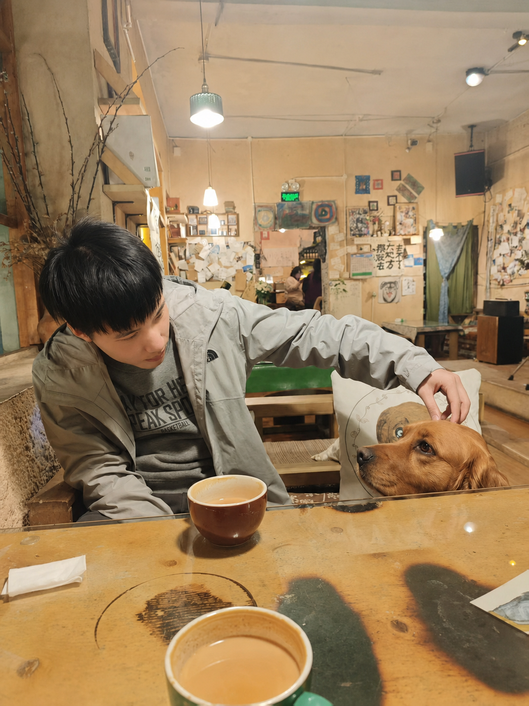

Zheng-Hui Huang|黄正辉
I am a second-year Ph.D. student at the Graduate Institute of Networking and Multimedia, National Taiwan University, advised by Yung-Yu Chuang and Yu-Lun Liu. My research focuses on video generative models and computational photography.
I received my M.S. in Computer Science and Information Engineering from National Taiwan University and my B.S. in Electrical Engineering from Yuan Ze University. I am currently a research intern at Shanda AI Research Tokyo, working on rendering algorithms with Zhixiang Wang, and previously interned at the Shanghai AI Laboratory with Kaipeng Zhang.
News
- Feb 2026Reflection Separation from a Single Image via Joint Latent Diffusion accepted to CVPR 2026.
- Dec 2025SkyMatte: a High-Quality Dataset for Improving Sky Image Matting accepted to ICASSP 2026.
- Dec 2025Joined Shanda AI Research Tokyo as a research intern.
- Aug 2025Joined Shanghai AI Laboratory as a research intern.
- Jun 2024Semantic-Region Specific Lookup Tables for Image Enhancement via Unpaired Learning accepted to ICIP 2024.
Publications
* denotes equal contribution.